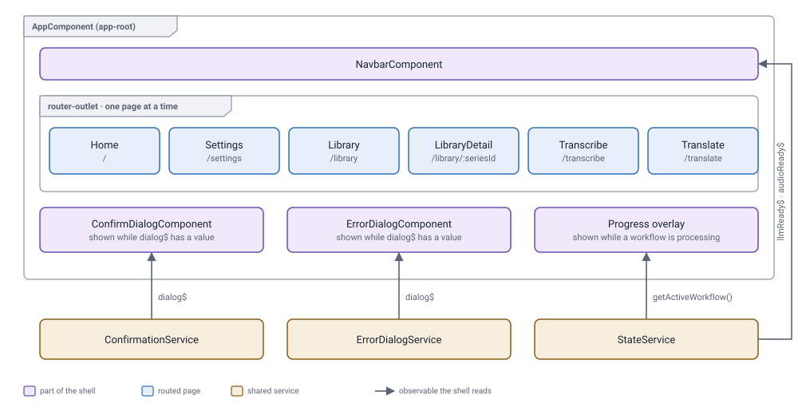

Frontend architecture
The Angular app: the shell, its pages, the state they share and the components they are built from.
Structure
AppComponent stays on screen the whole time; the router swaps the page inside it.

When the app starts, AppComponent calls getServerVariables(). If the LLM or the audio model isn't ready, it sends the user to Settings.
Pages
| Route | Component | Shared components | ApiService calls |
|---|---|---|---|
/ | HomeComponent | None | None |
/settings | SettingsComponent | tabs, subsection, primary-button, tooltip-icon | getSettingsSchema, getServerVariables, checkRunning, loadLlmModel, loadAudioModel, loadSearchModel |
/library | LibraryComponent | subsection, primary-button, secondary-button, loading-text-indicator | listSeries, createSeries, deleteSeries |
/library/:seriesId | LibraryDetailComponent | tabs, subsection, file-upload, primary-button, secondary-button, loading-text-indicator | getSeries, updateSeries, character and glossary add/update/delete, startLibraryUpdate |
/transcribe | TranscribeComponent | tabs, subsection, file-upload, waveform-player, text-field, downloads-list, primary-button, tooltip-icon, loading-text-indicator | transcribeAudio, transcribeFile, listFiles, getFileBlob, deleteFile |
/translate | TranslateComponent | tabs, subsection, file-upload, text-field, downloads-list, primary-button, tooltip-icon, loading-text-indicator | listSeries, translateLine, translateFile, reviewTranslatedFile, listFiles, getFileBlob, deleteFile |
What each call returns is on the Routes and API page.
Shared state
StateService holds values that more than one component needs, or that must survive leaving a page. Each value is an RxJS BehaviorSubject: it always has a current value, and anything subscribed is told when it changes. Nothing is saved, so a browser refresh resets all of it.
| Value | Holds | Written by | Read by |
|---|---|---|---|
llmReady | Whether the LLM is loaded | AppComponent, Settings | Navbar, Settings |
audioReady | Whether the audio model is loaded | AppComponent, Settings | Navbar, Settings |
searchReady | Whether web search is loaded | AppComponent, Settings | LibraryDetail, Settings |
isReady | Whether the LLM and audio model are both loaded | AppComponent, Settings | Nothing |
loadingLlm, loadingAudio | Whether a model is loading | Settings | Settings |
serverLlmVars, serverAudioVars | The loaded models' current settings | Settings | Settings |
settingsSchema | The settings forms for each model | Settings | Settings |
selectedSeriesId | The series chosen for translation | Translate | Translate |
activeSubtitleFile | The selected subtitle file | Translate, LibraryDetail | Translate, LibraryDetail |
activeTranslatedSubtitleFile | The translated file selected for review | Translate | Translate |
subtitleFileInfo, …Loading, …Error | Statistics for the selected subtitle file | Cleared when the file changes | Nothing |
translatedSubtitleFileInfo, …Loading, …Error | Statistics for the selected translated file | Cleared when the file changes | Nothing |
workflowStates | One record per workflow: status, active task, progress, message, ETA, result, error | trackWorkflow(), started by Translate, Transcribe, LibraryDetail | AppComponent, Translate, Transcribe, LibraryDetail |
Because activeSubtitleFile is shared, a file selected on Translate is already selected for a library update, and the other way round.
Reading and writing a value
llmReady as an example. StateService keeps the subject private and exposes a setter, a getter and the observable:
private llmReadySubject = new BehaviorSubject<boolean | null>(null);
public llmReady$ = this.llmReadySubject.asObservable();
setLlmReady(ready: boolean | null): void { this.llmReadySubject.next(ready); }
getLlmReady(): boolean | null { return this.llmReadySubject.value; }AppComponent writes it
this.apiService.getServerVariables().subscribe({
next: (response) => {
const data = response.data;
...
this.stateService.setLlmReady(data.llm_ready);
this.stateService.setAudioReady(data.audio_ready);
},
});NavbarComponent reads it
this.stateService.llmReady$.subscribe(ready => {
this.llmReady = ready === true;
});Workflow state
When the backend accepts a job, the page hands it to trackWorkflow(), which polls it every second and copies each response into workflowStates. Polling lives in the service, so it keeps going when the user leaves the page.
trackWorkflow(workflow: WorkflowId, message: string, seriesId: string | null = null): void {
this.patchWorkflowState(workflow, { status: 'processing', message, result: null, error: null, seriesId, … });
this.pollSubscription = timer(1000, 1000).pipe(
exhaustMap(() => this.apiService.getWorkflowResult(workflow)),
).subscribe({
next: (response) => {
const [current, total] = response.data?.progress ?? [0, 0];
this.patchWorkflowState(workflow, { status: response.status, current, total, result: response.data?.result ?? null, … });
if (response.status !== 'processing') {
this.stopPolling();
if (response.status === 'error') this.errorDialogService.show(response.message);
}
},
});
}Pages subscribe to workflowStates$ to update their buttons and results. The progress overlay reads the same record through getActiveWorkflow(). The responses being polled are shown on the Routes and API page.
Components
Shared components don't call services. They receive data through inputs and report user actions through outputs; the page does the work.
| Component | What it does |
|---|---|
tabs, tab | Tabbed sections. Hidden tabs keep their state. |
subsection | Titled section with an optional tooltip. |
file-upload | File picker; emits filesSelected. |
text-field | Multi-line text that switches between reading and editing. |
primary-button, secondary-button | Buttons. |
tooltip-icon | Help icon with a tooltip. |
loading-text-indicator | Animated loading text. |
downloads-list | Searchable, sortable, paged file list; emits refresh, download and delete. |
waveform-player | Audio playback with a waveform and a selectable range. |
navbar, progress-bar, confirm-dialog, error-dialog | Used only by the shell. |
context-status | Not used anywhere. |
Example: the Translate page's downloads list
The component declares what it needs and what it reports:
export class DownloadsListComponent {
@Input() files: { name: string; size: number; modified: string }[] = [];
@Input() isLoading = false;
@Input() error = '';
@Input() deletingFilename = '';
@Output() refresh = new EventEmitter<void>();
@Output() download = new EventEmitter<string>();
@Output() delete = new EventEmitter<string>();
}The page passes its data in and connects each output to one of its own methods:
<app-downloads-list
[files]="section.files"
[isLoading]="section.isLoading"
[error]="section.error"
[deletingFilename]="section.deletingFilename"
(refresh)="refreshDownloadSection(section)"
(download)="downloadFile(section, $event)"
(delete)="deleteFile(section, $event)">
</app-downloads-list>When the user clicks delete, the component only emits the filename. The page asks for confirmation, calls the API and updates the list it passes back in:
async deleteFile(section: DownloadSection, filename: string): Promise<void> {
const confirmed = await this.confirmationService.confirm({
title: 'Confirm Deletion',
message: `Delete ${filename}? This cannot be undone.`,
confirmLabel: 'Delete',
});
if (!confirmed) return;
section.deletingFilename = filename;
this.apiService.deleteFile(section.folder, filename).subscribe({
next: () => {
section.files = section.files.filter(file => file.name !== filename);
section.deletingFilename = '';
},
error: () => {
this.errorDialogService.show('Failed to delete file. Please try again.');
section.deletingFilename = '';
},
});
}Dialogs
Both dialogs are drawn once by AppComponent. Any page opens them through a service, which puts the dialog's content into its dialog$; the shell shows the dialog while dialog$ has a value.
A page asks for confirmation
const confirmed = await this.confirmationService.confirm({
message: `Delete ${filename}? This cannot be undone.`,
});confirm() returns a promise that resolves to true or false when the user clicks a button.
A page reports an error
this.errorDialogService.show(
'Failed to delete file. Please try again.',
);The dialog stays until the user dismisses it.
The shell connects the dialogs' buttons back to the services:
<app-confirm-dialog
*ngIf="confirmationService.dialog$ | async as dialog"
[dialog]="dialog"
(confirmed)="confirmationService.resolve(true)"
(cancelled)="confirmationService.resolve(false)">
</app-confirm-dialog>
<app-error-dialog
*ngIf="errorDialogService.dialog$ | async as dialog"
[dialog]="dialog"
(dismissed)="errorDialogService.dismiss()">
</app-error-dialog>